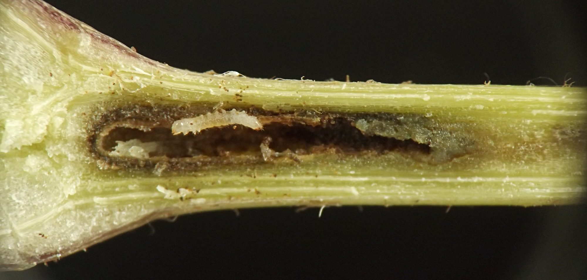
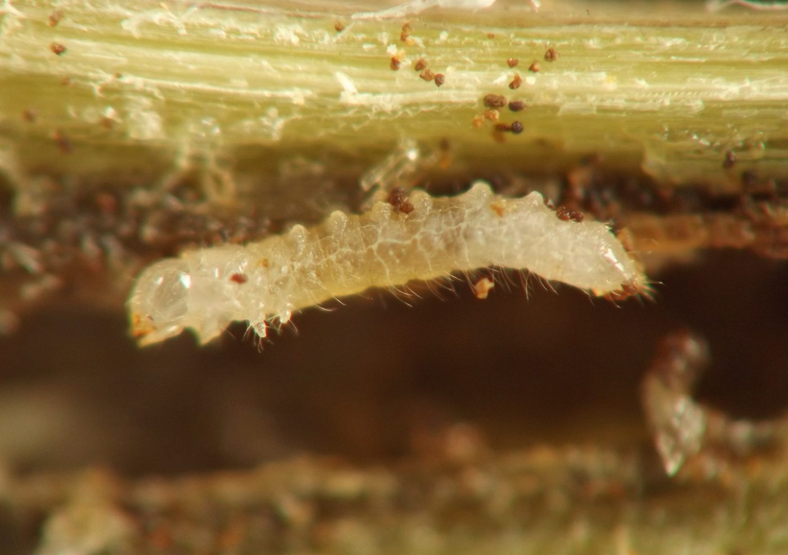
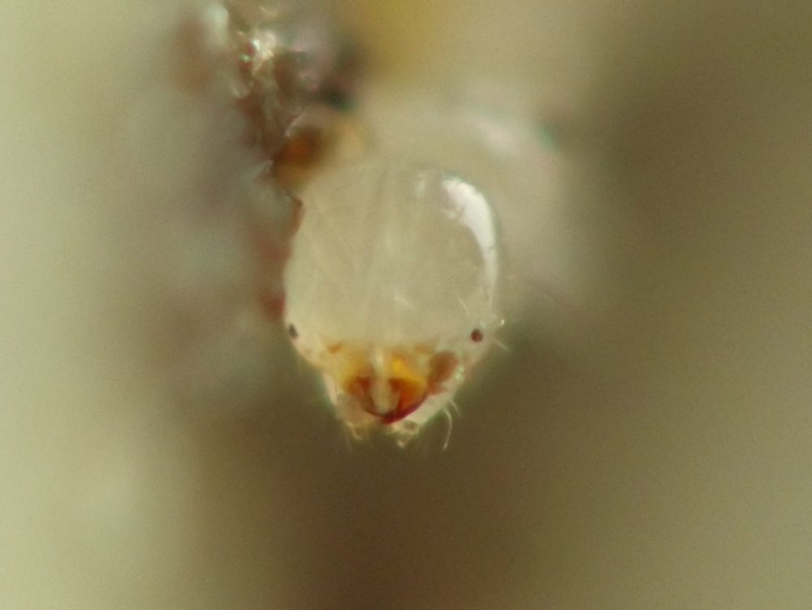
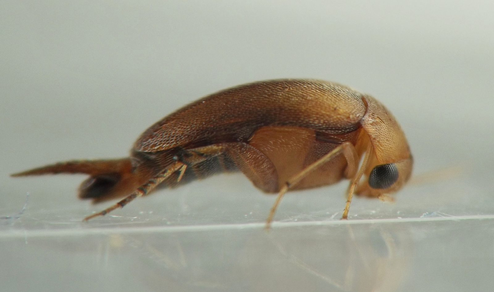
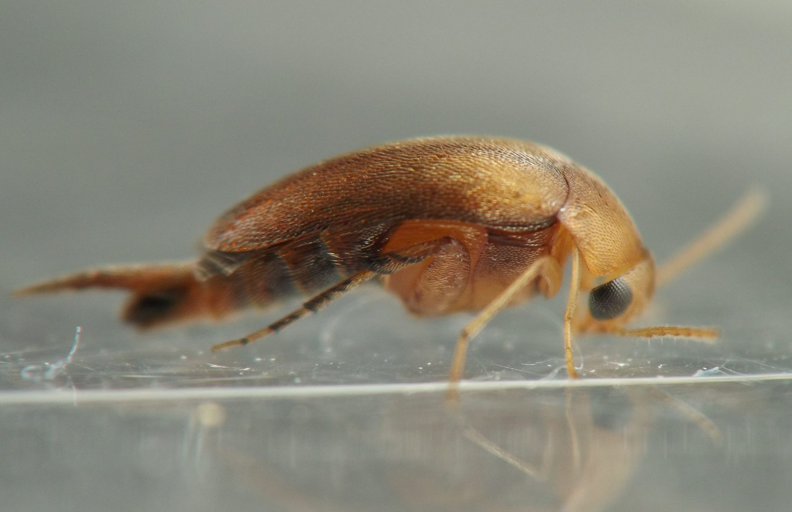
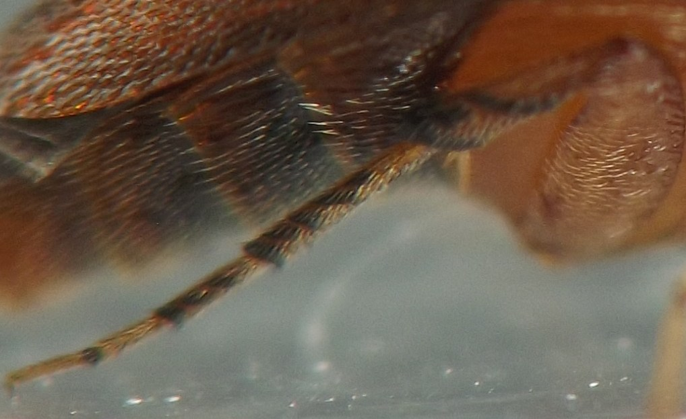
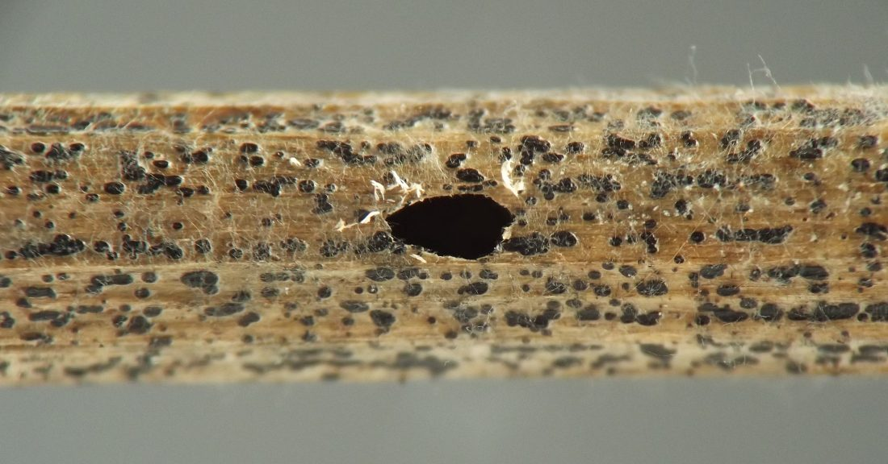

Petiole borer (Coleoptera: Mordellidae) in Aralia
| Record no.: | 0069 |
|---|---|
| Feeding guild: | Petiole borer |
| Taxonomy: | Coleoptera: Mordellidae: cf. Mordellistena sp. |
| Stages observed: | trace, larva, adult |
| Distribution observed: | IA |
| Hosts in Aralia: | A. nudicaulis (wild sarsaparilla) |
I located a young larva in August 2021, in a tunnel in a leaf stalk of a living plant. I also found a second larva in late May 2022; it had overwintered in the senesced plant material (the exact nature of which I did not record, but it was either a leaf stalk or a stem). The latter individual emerged as an adult in early June. As an adult, it was a rather uniform reddish-orange color overall, with very fine pubescence on the elytra.

 Prev
Prev













Page created: February 10, 2026. Last update: October 2, 2026